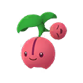
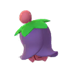
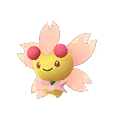
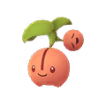

포켓몬GO 체리버 진화조건, 체리꼬 네거폼·포지폼 결정법까지
포켓몬GO 오래 하신 분들도 은근히 헷갈려 하시는 포켓몬이 하나 있는데요, 바로 체리버예요. 신오지방 버찌 포켓몬이라 초반부터 흔하게 마주치는 편인데, 막상 진화시키려고 보면 태양의돌 같은 아이템이 필요한 건 아닌지, 날씨를 맞춰야 하는 건 아닌지 헷갈려 하시는 분들이 의외로 많더라고요. 그래서 오늘은 체리버가 정확히 어떤 조건으로 체리꼬가 되는지, 그리고 다들 제일 궁금해하시는 네거폼·포지폼은 어떻게 정해지는지까지 한 번에 정리해볼게요. 특히 폼 종류에 따라 도감에 찍히는 모습도 달라지다 보니, 이번 기회에 조건을 정확히 짚어두면 도감 채우실 때도 헷갈릴 일이 줄어듭니다.
체리버 진화조건, 정확히 뭐가 필요한가요
체리버는 캔디 50개만 모으면 별도 아이템 없이 바로 체리꼬로 진화할 수 있어요.
포켓몬 도감을 보면 웬만한 포켓몬은 진화에 캔디만 있으면 되는데, 체리버는 유난히 '태양의돌이 필요한 거 아니야?' 하는 얘기가 도는 편이에요. 메인 시리즈 게임에서 체리꼬가 날씨에 따라 폼이 갈리는 독특한 포켓몬이다 보니 그런 오해가 생기기 쉬운 것 같은데, 포켓몬GO에서는 아래 세 가지만 기억하시면 됩니다.
- 진화에 필요한 건 캔디 50개뿐이에요
- 태양의돌 같은 특수 진화 아이템은 필요 없어요
- 진화 가능한 시간대(낮/밤) 제한도 없어요
캔디만 채워지면 언제든 진화 버튼을 누를 수 있으니, 체리버 사탕이 부족하면 필드리서치 보상으로 꾸준히 챙기시거나 남는 체리버를 박사에게 보내서 사탕으로 바꿔두시면 됩니다.

체리버는 신오지방 풀 타입 버찌 포켓몬이에요.
이미지 출처: Serebii.net · 네이버 본문엔 받아서 재업로드 권장
네거폼·포지폼은 대체 어떻게 정해지나요
체리버가 체리꼬로 진화할 때 네거폼이 나올지 포지폼이 나올지는 진화 버튼을 누르는 순간 완전히 무작위(해외 매체 추정 50:50, 나이언틱(Niantic) 공식 확률 발표는 없어요)로 정해져요.
저도 처음엔 '지금 우리 동네 날씨가 맑으니까 포지폼이 나오겠지' 하고 기대했다가 네거폼이 나와서 살짝 아쉬웠던 적이 있는데요, 실제로는 진화 시점의 실제 날씨든 인게임 날씨든 폼 결정이랑은 전혀 상관이 없다고 해요. 그냥 동전 던지기처럼 반반이라고 보시면 되는데(다만 정확한 수치는 아니에요), 한 번 정해진 폼은 그 뒤로 날씨가 바뀌어도 계속 그대로 유지돼서, 원하는 폼이 안 나왔다면 사탕을 더 모아 다른 체리버로 다시 진화시켜보는 수밖에 없어요.
캔디 50개가 채워지면 진화 버튼이 활성화돼요.

네거폼 체리꼬예요.
이미지 출처: Serebii.net · 네이버 본문엔 받아서 재업로드 권장
반대로 포지폼이 나오면 이런 모습이에요.

포지폼 체리꼬는 화사한 붉은빛 잎사귀가 특징이에요.
이미지 출처: Serebii.net · 네이버 본문엔 받아서 재업로드 권장
다만 '야생에서 어떤 폼의 체리꼬를 직접 만나느냐'는 건 조금 다른 얘기예요. 맑음 날씨 부스트가 켜져 있을 때는 야생에 포지폼 체리꼬가 좀 더 자주 나타난다고 알려져 있는데요, 이건 진화 확률이 아니라 '야생 스폰 확률'에 영향을 주는 부분이라 헷갈리지 않게 구분해서 기억해두시면 좋을 것 같아요.
메인 시리즈랑은 뭐가 다른가요
메인 시리즈 포켓몬 게임에서는 체리버가 레벨 25에 도달하면 자동으로 체리꼬가 되고, 폼은 특성 '플라워기프트'가 쾌청 날씨일 때만 일시적으로 포지폼으로 바뀌었다가 날씨가 풀리면 다시 네거폼으로 돌아가는 구조예요.
나무위키 설명에 따르면 메인 시리즈의 폼 전환은 진화와는 무관하게 배틀 중에도 실시간으로 바뀌는 일시적인 상태라고 해요. 포켓몬GO에서는 체리꼬(포지폼)만 웨더볼(불꽃) 기술을 배워요. 진화 한 번으로 폼이 영구히 고정된다는 점도 메인 시리즈와 다른 부분이죠. 표로 정리하면 이래요.
| 메인 시리즈 | 포켓몬GO | |
|---|---|---|
| 진화 조건 | 레벨 25 도달 | 캔디 50개 |
| 폼 결정 방식 | 날씨(플라워기프트)로 실시간 전환 | 진화 순간 무작위(50:50 추정) |
| 폼 유지 | 날씨 풀리면 원래대로 | 진화 후 영구 고정 |
체리버, 지금 어디서 만날 수 있나요
체리버는 2019년 5월에 추가된 포켓몬이에요. 이벤트 기간엔 등장이 늘어나고, 평소 등장 여부는 인게임이나 공식 소식에서 확인하는 게 가장 정확해요. 필드리서치는 시즌마다 구성이 바뀌니, 지금 리서치 목록에 체리버가 있는지는 인게임에서 직접 확인하는 게 정확합니다.
다만 이벤트 기간에는 출현 확률이 올라가거나 이로치 확률이 함께 높아지는 경우도 종종 있으니, 지금 어떤 이벤트가 진행 중인지는 인게임 이벤트 탭이나 공식 소식에서 한 번 확인해보시는 게 가장 정확해요. 이로치(색이 다른 개체) 체리버·체리꼬는 2022년 지속가능성 위크에 처음 출시된 이후로 등장 이력이 있고, 지금 등장 여부는 인게임에서 직접 확인해보시는 게 정확해요. 사탕을 모으실 때 이로치 여부도 같이 확인해보시면 좋아요.

이로치 체리버는 2022년 지속가능성 위크에 처음 등장했어요.
이미지 출처: Serebii.net · 네이버 본문엔 받아서 재업로드 권장
자주 묻는 질문
Q. 체리버가 알(에그)에서도 나오나요?
체리버가 에그 부화로도 나오는지는 자료마다 얘기가 조금씩 갈려서, 정확한 건 인게임 알 목록에서 직접 확인해보시는 걸 추천드려요.
Q. 체리버가 레이드에도 나온 적 있나요?
예전에 레이드 보스로 등장한 적이 있다는 이야기가 있는데, 정확히 몇 성 레이드였는지나 언제까지였는지는 확인이 어려워요. 이벤트 기간엔 레이드로 나올 때도 있지만, 평소엔 야생 스폰이나 필드리서치 쪽에서 더 자주 보인다는 이야기가 많아요. 지금 등장 방식은 인게임이나 공식 소식에서 확인하는 게 가장 정확해요.
Q. 체리버는 몇 세대, 어떤 타입 포켓몬인가요?
체리버는 4세대 신오지방 풀 타입 포켓몬으로 도감번호 420번이고, 진화체인 체리꼬는 421번이에요.
Q. 체리버 이로치, 확률이 따로 있나요?
정확한 수치는 공식 발표가 없지만, 유저들 사이에서는 이벤트 기간에 마주칠 확률이 살짝 오른다는 이야기가 많아요. 평소 지나치는 체리버도 도감에서 한 번씩 이로치 여부를 확인해보시는 걸 권해드립니다.
체리버 진화조건 정리
요약해보면, 체리버는 캔디 50개만 채우면 아이템 없이 바로 체리꼬로 진화할 수 있고, 네거폼·포지폼은 진화 순간 완전 무작위로 정해져요. 날씨나 시간대는 진화 자체엔 영향이 없으니, 원하는 폼이 안 나왔다고 너무 아쉬워하지 마시고 편하게 진화 버튼 눌러보시면 좋을 것 같아요. 사탕만 꾸준히 모아두시면 언제든 다시 도전할 수 있으니까요.
✔ 포켓몬GO 같이 보기 좋은 내용
· 포켓몬고 황혼의여정시즌 업데이트 정리, 신규포켓몬 메가진화 맥스배틀 뭐가 바뀌었나
· 포켓몬GO 9월이벤트 2026 레이드 커뮤니티데이 일정 총정리
· 포켓몬GO 오케이징진화 칼라마네로 만드는 방법 완전 정리
참고한 곳
· Pokemon.com 공식 뉴스
· Dexerto
· GameRant